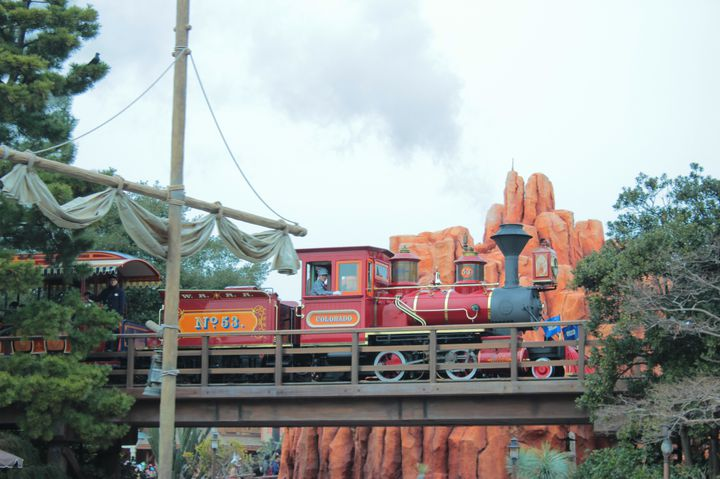

基本情報
ビックサンダーマウンテン
かつて炭鉱として栄えた山を列車に乗って勢いよく走り抜けるアトラクション、ビックサンダーマウンテン。
舞台は1840年代、ゴールドラッシュ時代のカリフォルニアです。鉱山には一攫千金を夢見て多くの人がやってきました。
しかしある日、発掘作業でダイナマイトが使われます。
その爆発音を聞いた原住民たちは山の神の祟りだと恐れ ”ビックサンダーマウンテン” と呼ぶようになりました。
そして廃坑となった現在でも無人の暴走列車が走り続けており、それに私たちは乗っているんだとか。
スプラッシュマウンテン
丸太のボートに乗って滝つぼに一気に落ちていくスプラッシュマウンテン。
ある日アライグマのラケッティがこっそり密造酒を作っている際に爆破事故を起こしてしまい、ビーバーブラザーズの作ったダムを崩壊。
山から水があふれだします。そこから ”スプラッシュマウンテン" と呼ばれるようになったんだとか。
スプラッシュマウンテンの元凶とも言えるアライグマのラケッティですが、
現在はアトラクション出口近くで「ラケッティのラクーンサルーン」というお店を開き、チュロスなどの軽食を販売しています。
お酒の密造にはすっかりこりた様子ですね。
ジャングルクルーズ
愉快なトークと共にジャングルの動物たちを迫力満点で見ることができるジャングルクルーズ。
こちらの探検ツアーを運営しているのは1922年に設立されたサファリ・トレーディング・カンパニー」という船を使った貿易会社です。

のちに船だけでなく鉄道による運搬も始め、会社は好調。しかし、徐々に貿易の需要が減っていき経営危機に陥ります。
そこで始めたのが船と鉄道を使った2つの探検ツアーでした。ジャングルクルーズとウエスタンリバー鉄道が同じ建物にあるのは意味があるんですね。
プーさんのハニーハント
「プーさんのハニーハント」の待ち時間で不思議に思ったことはありませんか？
通常、アトラクションの待ち時間は5分、10分、15分といったキリのいい数字で表記されます。
しかし、「プーさんのハニーハント」では次のような待ち時間が設定されています。
| 【待ち時間】 | 【意味】 | 【表示される条件】 |
|---|---|---|
| 8分 | 蜂 | 5〜10分待ちのとき |
| 14分 | イーヨー（プーさんに登場するキャラクター） | 10分～15分のとき |
| 82分 | ハニー | 60分～80分のとき |
| 832分 | はちみつ | サンクスデー（キャスト貸し切り時） |
ディズニーらしいユーモアのある仕掛けですね♪

「プーさんのハニーハント」での楽しみの一つ『はちみつの大砲』。
アトラクションの途中、ズオウとヒイタチの夢の世界へ行ったときに出てくるアレです。
実はこの大砲、受けられるハニーポッドが決まっているんです！ゲストが乗るハニーポッドは、
3台で1セットとなっています。
その中で大砲が受けられるのは1番目と3番目のハニーポッドのみ。
大砲を受けたい方は、運にはなりますが場合によってはキャストさんに
相談してみてもいいかもしれませんね♪
ちなみにあの大砲の煙は、東京ディズニーシーの「インディージョーンズ」
でも使用されているそうですよ。
カリブの海賊
「カリブの海賊」は、カリブ海沿岸で17世紀から19世紀にかけて暴れていた海賊たちがモデルとなったアトラクション。
しかし残念ながら彼は完成を待たずにこの世を去ってしまったため、ウォルト遺作とも言えるアトラクションなのです。
建物を正面から見ると、「ちょっと大きめの邸宅」くらいの大きさしかありませんが、外観からは想像できないくらいの規模の大きいアトラクションでもあるのです。
また、東京ディズニーランドのグランドオープン時には、パークの総建設費の約10％が使われたアトラクションでもあります。
ランドの総建設費は約1,580億円となっていますが、このうちの約160億円が、この建設費に充てられているのです。
「カリブの海賊」は、30年以上前に160億円ですので、その規模がわかります。
タワー・オブ・テラー
階建てで59メートルあり、東京ディズニーリゾートの中で一番高い建物です。
ちなみに60mを超えると航空障害灯を設置しないといけない航空法がありディズニーの世界観を守るため、これ以上の建物は今後もできないと思われます。
タワーオブテラーの建物をよく見ると、いろんな建築手法でできた建物が混ざっています。
これはタワー・オブ・テラーの主「ハリソン・ハイタワー三世」のわがままでできました。
建築としてタワー・オブ・テラーをよく見ると非常に面白いですよ。
インディージョーンズ
「若さの泉」はアトラクション内で直接見ることはできないが、泉が光で反射した壁を見ることができる。
アトラクション序盤、クリスタルスカル（ガイコツの頭）が見えてきた直後、ライドは大きく左に曲がる際に右側の壁に注目。

ロストリバーデルタの入口の水路には、インディー博士が乗ってきた飛行機が不時着しているがみると「C-3PO」という文字が。
これは映画『スター・ウォーズ』シリーズに登場するあのロボットの名前と一緒。
センターオブジアース
「センターオブジアースのキューライン(待機列)に並んでいると、スタンバイ列とファストパス列が合流するポイントがあります。
そのあとすぐ、通称”テラヴェータ”と呼ばれるエレベータに乗り込み、地下走行車の出発地点ベースステーションに向かいます。
このテラベータは物凄い強度と安定性を有し、地下800mまで一気に下降するのです。
というのは、センターオブジアースのバックグラウンドストーリーであり、実際には800m地下に進んでいません。
さすがに800mはディズニーの構造上ムリでしょうからね。
では、実際はどれくらい地下に潜っているのかとうと、実はエレベータは下降していません!!
上昇しています。
センターオブジアースのエレベータに乗った多くの方が、下に降りている感覚を覚えると思います。
上昇するエレベータに乗っているのに、なぜ下に下がっている感覚になるのかというと、次のような仕組みによるものだと考えられます。
まず、風による錯覚というのは、エレベータが上昇している時に下側から微量な風を噴出することで、落ちている感覚を演出しています。
音による錯覚というのは、エレベータが動いている時に出す音によって下降していると錯覚させているのです。
また、センターオブジアースのキャストさんが「地下800mにあるベースステーションへ出発します」というセリフも、エレベータが下に行っていると思い込ませているのではと考えられます。
いくつもの仕組みが重なり上昇するエレベータなのに下降していると感じるのですね。
実際、センター・オブ・ジ・アースの出口に向かう時、降り場から結構長い階段を下ります。
ちなみに、センター・オブ・ジ・アースのエレベータは、油圧式と呼ばれるエレベータを採用しています。
私たちが普段乗っているエレベータのほとんどはロープ式のエレベータです。
油圧式のため、ほんのり独特の匂いがして地底感を感じるようになっています。
ほんの数秒乗るエレベーターにも様々な仕掛けがされていて、さすがディズニーだなって感じですね。
トイストーリーマニア
いつでも大人気の「トイ・ストーリー・マニア! 」のスタンバイ列は、建物から外に出ると、壁沿いに並ぶ事になります。
建物外側に沿ってスタンバイする場所に、アトラクションの様子や、キャラクターが描かれた、3枚の大きな絵が存在します。
実はこの三枚の絵、1つの絵に、それぞれ1つの隠れミッキーが描かれています。
3つともそんなに難しい場所ではありませんので、ぜひご自身で探してみてください。
それぞれの3枚の絵の隠れミッキーのヒントをお教えしておきますね。
（建物正面に向かって奥から）
【2】ブタの貯金箱、ハムやポテトヘッドが描かれた絵 右側に浮かんでいる雲の形が……?
【3】アトラクション前に多くのキャラクターが並んだ絵 建物の右側にある柱の模様が……?
ここはスタンバイで並ぶ場合は、ほぼ必ず通る場所。 待ち時間にぜひ探してみてくださいね!
パーク内に数多くあるアトラクション等には、スタンバイの待ち時間を少しでもゲストに楽しんでもらおうと言う意図から、隠れたギミックが仕掛けられている事が多くあります。
代表的なものは「隠れミッキー」がありますが、それ以外にも様々なこだわりや、隠された楽しみが、たくさんあります。
一見してすぐにわかるものから、まず簡単には見つけられない物まで、様々です。
今回ご紹介するのは、かなりマニアックなもの。
ちょっと見ただけではその意味がわからないのですが、実は驚きの秘密が……!
建物に入ってすぐ目の前には、ウッディやジェシー、そしてプロスペクターが書かれた絵本があります。
ファストパス利用の場合は、本の右側をまっすぐ進んでしまうので気づく事がまずないのですが、スタンバイの場合は、この本の左側を通過します。
その時、この本の裏側上部には「バーコード」の様な物があります。
まず、誰もほとんど見ない様な場所に記された数字に、実は隠れた秘密があります。
番号は「786936138047」。
一見なんの意味もなさそうな数字に、小さくて大きな秘密。こんなこだわりもディズニーらしいですよね。
シンドバッドの大冒険
「コンパス・オブ・ユア・ハート」が名曲と呼ばれるのは歌っているのが元劇団四季の初代シンバ役だったからというだけではありません。
アラン・メンケンは「リトル・マーメイド」のアンダー・ザ・シーや「アラジン」のホール・ニュー・ワールドなど、
誰もが聞いたことのあるディズニーの名曲を数多く世に送り出してきた人物です。
そんな偉大な作曲家が「シンドバッド・ストーリーブック・ヴォヤッジ」のテーマ曲を作曲したのです。
隠れアラジンが見られるのはこの場面。シンドバッドとチャンドゥの間になにやら地図がありますが、
よく見ると魔法のじゅうたんに乗ったアラジンとジャスミンが描かれています。
魔法のじゅうたんに乗って楽しげな二人。まさかこんなところにアラジンとジャスミンがいるとは驚きですよね。
アトラクションに乗った際はぜひチェックしてみてください。
今後の展望
Githubを使ってこのサイトを公開した。またphpを使って問い合わせの機能を追加しようとしたが、
phpなどのサーバーサイド言語はGithubで使えないらしく、データベースなどの勉強をするにはサーバーをレンタルする方法を取る必要があるらしい。
とりあえずgoogleフォームを設置してみんなの要望を回収しようと思う。
contact
※今後扱う題材を変更する場合があります。よろしくお願いします。